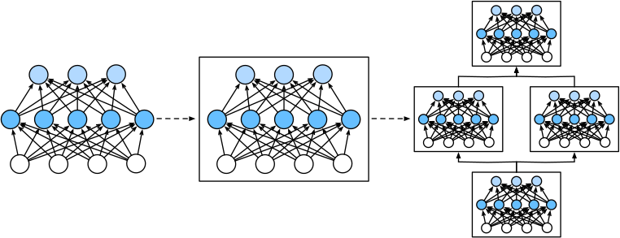

层和块#
为了实现这些复杂的网络，我们引入了神经网络块的概念。 块（block）可以描述单个层、由多个层组成的组件或整个模型本身。 使用块进行抽象的一个好处是可以将一些块组合成更大的组件， 这一过程通常是递归的，如下图所示。 通过定义代码来按需生成任意复杂度的块， 我们可以通过简洁的代码实现复杂的神经网络。
import torch
from torch import nn
from torch.nn import functional as F
#一个有序的容器，神经网络模块将按照在传入构造器的顺序依次被添加到计算图中执行，同时以神经网络模块为元素的有序字典也可以作为传入参数。
net = nn.Sequential(nn.Linear(20, 256), nn.ReLU(), nn.Linear(256, 10))
X = torch.rand(2, 20)
net(X)
tensor([[-0.1119, -0.1422, -0.0020, -0.3754, 0.1383, -0.0881, -0.2828, -0.0403,
-0.0898, -0.2180],
[-0.1152, 0.0369, 0.1260, -0.2701, 0.1975, 0.0024, -0.2883, -0.0690,
-0.1130, -0.2635]], grad_fn=<AddmmBackward0>)
自定义块#
要想直观地了解块是如何工作的，最简单的方法就是自己实现一个。 在实现我们自定义块之前，我们简要总结一下每个块必须提供的基本功能。
将输入数据作为其前向传播函数的参数。
通过前向传播函数来生成输出。请注意，输出的形状可能与输入的形状不同。例如，我们上面模型中的第一个全连接的层接收一个20维的输入，但是返回一个维度为256的输出。
计算其输出关于输入的梯度，可通过其反向传播函数进行访问。通常这是自动发生的。
存储和访问前向传播计算所需的参数。
根据需要初始化模型参数。
class MLP(nn.Module):
# 用模型参数声明层。这里，我们声明两个全连接的层
def __init__(self):
# 调用MLP的父类Module的构造函数来执行必要的初始化。
# 这样，在类实例化时也可以指定其他函数参数，例如模型参数params（稍后将介绍）
super().__init__()
self.hidden = nn.Linear(20, 256) # 隐藏层
self.out = nn.Linear(256, 10) # 输出层
# 定义模型的前向传播，即如何根据输入X返回所需的模型输出
def forward(self, X):
# 注意，这里我们使用ReLU的函数版本，其在nn.functional模块中定义。
return self.out(F.relu(self.hidden(X)))
首先，我们定制的__init__函数通过super().__init__()调用父类的__init__函数， 省去了重复编写模版代码的痛苦。 然后，我们实例化两个全连接层， 分别为self.hidden和self.out。
net = MLP()
net(X)
tensor([[ 0.0738, -0.2235, -0.2789, -0.0113, 0.0375, 0.0750, 0.0284, -0.0505,
0.3061, -0.0812],
[ 0.0781, -0.1592, -0.1163, 0.0409, -0.0591, 0.0528, -0.0966, -0.0723,
0.3990, -0.0317]], grad_fn=<AddmmBackward0>)
顺序块#
现在我们可以更仔细地看看Sequential类是如何工作的， 回想一下Sequential的设计是为了把其他模块串起来。 为了构建我们自己的简化的MySequential， 我们只需要定义两个关键函数
一种将块逐个追加到列表中的函数；
一种前向传播函数，用于将输入按追加块的顺序传递给块组成的“链条”。
下面的MySequential类提供了与默认Sequential类相同的功能。
# 实现上面torch.nn.Sequential函数
class MySequential(nn.Module):
def __init__(self, *args):
super().__init__()
for idx, module in enumerate(args):
# 这里，module是Module子类的一个实例。我们把它保存在'Module'类的成员
# 变量_modules中。_module的类型是OrderedDict
self._modules[str(idx)] = module
def forward(self, X):
# OrderedDict保证了按照成员添加的顺序遍历它们
for block in self._modules.values():
X = block(X)
return X
__init__函数将每个模块逐个添加到有序字典_modules中。
net = MySequential(nn.Linear(20, 256), nn.ReLU(), nn.Linear(256, 10))
net(X)
tensor([[-0.2354, 0.0145, 0.0147, 0.0482, 0.1377, -0.3800, 0.1905, 0.0111,
0.0607, 0.0264],
[-0.3232, 0.0131, 0.0579, 0.1129, 0.2099, -0.3040, 0.2228, -0.1000,
0.1519, -0.0359]], grad_fn=<AddmmBackward0>)
在前向传播函数中执行代码#
Sequential类使模型构造变得简单， 允许我们组合新的架构，而不必定义自己的类。 然而，并不是所有的架构都是简单的顺序架构。 当需要更强的灵活性时，我们需要定义自己的块。 例如，我们可能希望在前向传播函数中执行Python的控制流。 此外，我们可能希望执行任意的数学运算， 而不是简单地依赖预定义的神经网络层。
例如，我们需要一个计算函数我们需要一个计算函数\(f(\mathbf{x}，\mathbf{w})=c\cdot\mathbf{w}^{\top}\mathbf{x}\)的层,其中\(\mathbf{x}\)是输入，\(\mathbf{w}\)是参数\(c\)是某个在优化过程中没有更新的指定常量。 因此我们实现了一个FixedHiddenMLP类，如下所示：
class FixedHiddenMLP(nn.Module):
def __init__(self):
super().__init__()
# 不计算梯度的随机权重参数。因此其在训练期间保持不变
self.rand_weight = torch.rand((20, 20), requires_grad=False)
self.linear = nn.Linear(20, 20)
def forward(self, X):
X = self.linear(X)
# 使用创建的常量参数以及relu和mm函数
X = F.relu(torch.mm(X, self.rand_weight) + 1)
# 复用全连接层。这相当于两个全连接层共享参数
X = self.linear(X)
# 控制流
while X.abs().sum() > 1:
X /= 2
return X.sum()
在这个FixedHiddenMLP模型中，我们实现了一个隐藏层， 其权重（self.rand_weight）在实例化时被随机初始化，之后为常量。 这个权重不是一个模型参数，因此它永远不会被反向传播更新。 然后，神经网络将这个固定层的输出通过一个全连接层。
net = FixedHiddenMLP()
net(X)
tensor(-0.1045, grad_fn=<SumBackward0>)
我们可以混合搭配各种组合块的方法。 在下面的例子中，我们以一些想到的方法嵌套块。
class NestMLP(nn.Module):
def __init__(self):
super().__init__()
self.net = nn.Sequential(nn.Linear(20, 64), nn.ReLU(),
nn.Linear(64, 32), nn.ReLU())
self.linear = nn.Linear(32, 16)
def forward(self, X):
return self.linear(self.net(X))
chimera = nn.Sequential(NestMLP(), nn.Linear(16, 20), FixedHiddenMLP())
chimera(X)
tensor(0.2715, grad_fn=<SumBackward0>)